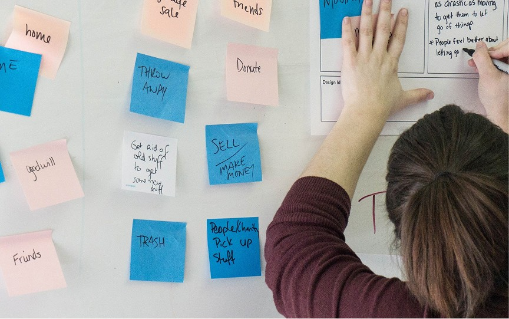
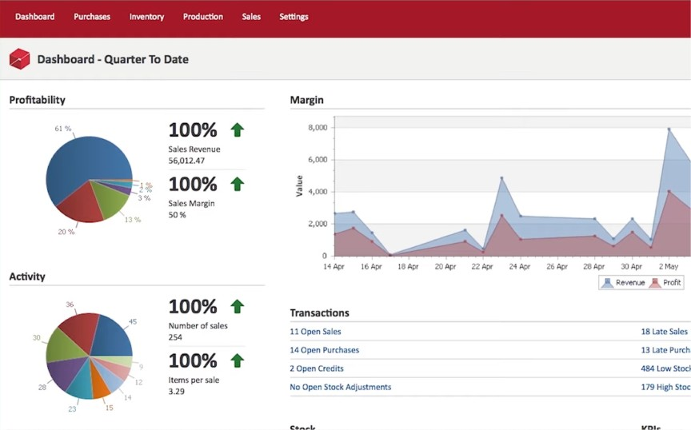
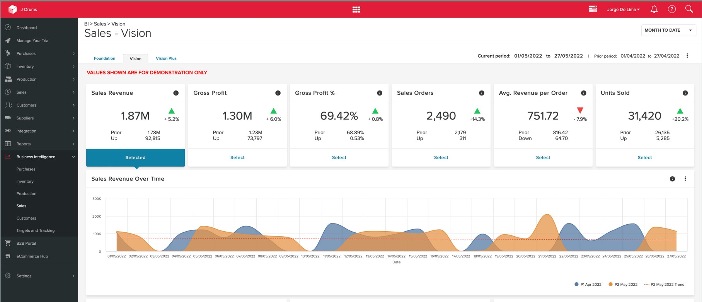

Context & challenge
The Unleashed dashboard served inventory-heavy businesses managing complex supply chains. Data was abundant but lacked prioritisation.
Users weren't struggling with access — they were struggling with meaning.
Role & contribution
As Senior Creative Designer on the dashboard workstream, I owned the reframing as much as the interface.
- Reframed dashboard objectives around decision velocity
- Defined the hierarchy strategy for data surfacing
- Led cross-functional alignment on KPI prioritisation
- Delivered the interaction and layout redesign
Research & insights
Dashboards should reduce interpretation time, not increase it.

Goals & strategic objectives
- Improve signal-to-noise ratio
- Increase daily dashboard engagement
- Reduce dependency on external exports
Design strategy & approach
Four principles carried the redesign, applied in this order so that prioritisation came before presentation.
- Data hierarchy — what has to be seen first, every time
- Progressive detail — depth on demand rather than by default
- Modular card architecture — composable, reorderable widgets
- Clear visual weighting — importance readable at a glance

Solution
- Reorganised KPI structure
- Introduced modular dashboard widgets
- Improved filtering and drill-down interaction
- Enhanced visual consistency and scanning clarity

Results & impact
- Increased dashboard engagement
- Reduced export reliance
- Improved user confidence in operational insights
The honest caveat: these outcomes are directional. The team tracked engagement and export behaviour, but I have no published figures to attach to them.
Reflection & learnings
Data-heavy environments demand ruthless prioritisation. This project reinforced the importance of designing for decision speed, not data density — the hardest conversations were about what to remove, not what to add.
Future direction: predictive alerts and anomaly surfacing, so the dashboard raises its hand instead of waiting to be read.